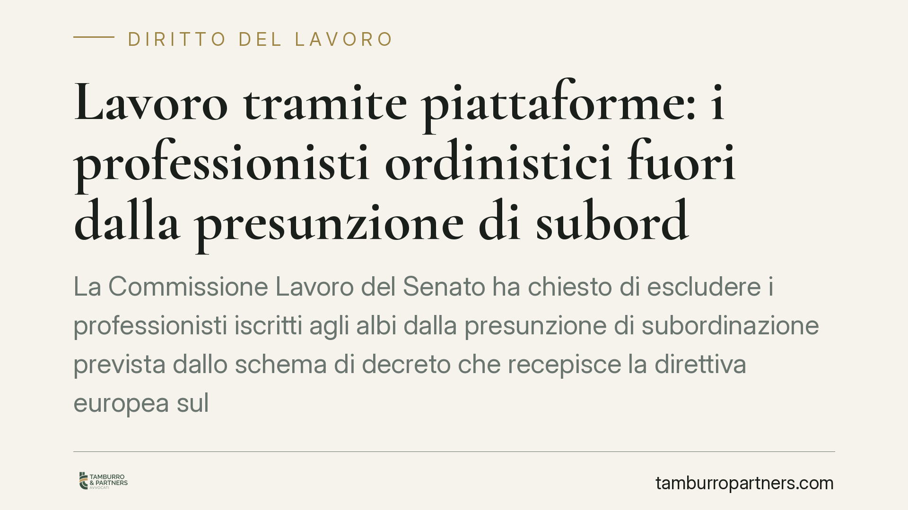

Lavoro tramite piattaforme: i professionisti ordinistici fuori dalla presunzione di subordinazione
La Commissione Lavoro del Senato ha chiesto di escludere i professionisti iscritti agli albi dalla presunzione di subordinazione prevista dallo schema di decreto che recepisce la direttiva europea sul lavoro tramite piattaforme. Resterebbero però le tutele sulla gestione algoritmica. Il nodo riguarda il confine tra autonomia reale e rapporti mascherati da collaborazione.

Il contesto
Lo schema di decreto all'esame del Governo recepisce la recente direttiva europea sul lavoro tramite piattaforme digitali. L'obiettivo della normativa è duplice: contrastare la cosiddetta "falsa autonomia" dei lavoratori su piattaforma e introdurre tutele specifiche contro gli effetti della gestione algoritmica, cioè l'uso di sistemi automatizzati per assegnare incarichi, valutare prestazioni e decidere disconnessioni o esclusioni.
Su questo schema, la Commissione Lavoro del Senato ha espresso un parere con una richiesta precisa: tenere i professionisti iscritti agli albi fuori dal perimetro della presunzione di subordinazione. La presunzione, in sintesi, è il meccanismo per cui, in presenza di determinati indici di controllo e organizzazione, il rapporto viene qualificato come subordinato salvo prova contraria a carico della piattaforma.
*I riferimenti al numero dell'atto del Governo e all'articolo specifico dello schema vanno confermati sul testo ufficiale pubblicato sul sito del Parlamento, trattandosi di un provvedimento ancora in fase di esame.*
Inquadramento normativo
Nel nostro ordinamento la disciplina delle collaborazioni etero-organizzate è contenuta nell'art. 2, comma 1, del D.lgs. 81/2015. La norma estende le tutele del lavoro subordinato ai rapporti di collaborazione in cui le prestazioni sono organizzate dal committente anche con riferimento a tempi e luogo di lavoro.
La stessa disposizione è stata ampliata dal D.L. 101/2019 (convertito con L. 128/2019), che ha chiarito l'applicabilità della disciplina anche quando l'organizzazione avviene tramite piattaforme digitali. È su questo impianto che si innesta il recepimento della direttiva europea, il quale introduce una presunzione di subordinazione destinata a spostare l'onere della prova.
Il punto controverso è l'ambito soggettivo: la direttiva lascia agli Stati margini di adattamento, e il Senato chiede di usarli per escludere chi esercita una professione intellettuale regolamentata, iscritto a un albo e tenuto a obblighi deontologici propri.
Implicazioni pratiche
La distinzione tra categorie è il cuore della questione.
Per il rider e, più in generale, per il lavoratore su piattaforma che svolge mansioni esecutive, la presunzione resta pienamente operativa. È la figura che la direttiva intende proteggere: chi riceve ordini, tempi e percorsi da un algoritmo con margini di autonomia minimi.
Per il professionista iscritto a un albo — avvocato, commercialista, ingegnere, medico — la logica cambia. Si tratta di soggetti che offrono prestazioni intellettuali con autonomia tecnica, vincoli deontologici e, spesso, una pluralità di committenti. Applicare a queste figure la presunzione di subordinazione rischierebbe di irrigidire modelli di collaborazione genuinamente autonomi.
Qui emerge il nodo più delicato. L'esclusione dei professionisti non deve diventare uno strumento per mascherare rapporti sostanzialmente subordinati dietro l'iscrizione formale a un albo. Se la piattaforma impone orari, esclusività di fatto, tariffe non negoziabili e controlli stringenti, la qualificazione del rapporto va valutata nella sostanza, a prescindere dall'etichetta. L'iscrizione all'ordine non è, da sola, una franchigia.
Un aspetto va sottolineato: anche nell'ipotesi di esclusione dalla presunzione, le tutele sulla gestione algoritmica resterebbero applicabili. Significa che pure il professionista autonomo avrebbe diritto a trasparenza sui criteri delle decisioni automatizzate, alla possibilità di contestarle e all'intervento umano su scelte che incidono sul rapporto. È una garanzia che prescinde dalla qualificazione del contratto.
Cosa fare in concreto
- Mappate il modello di collaborazione. Se operate tramite piattaforme, verificate indici di etero-organizzazione reale: imposizione di tempi, luoghi, tariffe e vincoli di esclusività. È la sostanza a qualificare il rapporto.
- Piattaforme: rivedete i meccanismi algoritmici. Predisponete informative trasparenti sui criteri delle decisioni automatizzate e procedure di contestazione con intervento umano. Queste tutele si applicano anche ai collaboratori autonomi.
- Professionisti: documentate l'autonomia. Conservate evidenza di pluralità di committenti, autonomia organizzativa e capacità di negoziazione. L'iscrizione all'albo non basta, da sola, a escludere la subordinazione.
- Non affidatevi all'etichetta contrattuale. La qualificazione formale non protegge da una riqualificazione se la realtà operativa racconta una storia diversa.
- Monitorate l'iter legislativo. Il testo è ancora in evoluzione: i contenuti definitivi, i riferimenti e i termini di recepimento vanno confermati sulla versione ufficiale del provvedimento.
---
Contributo informativo a cura di Tamburro & Partners Avvocati. Non costituisce parere legale.
Ogni storia di lavoro ha i suoi tempi.
Se gestisci HR e vuoi un confronto su contenzioso, ispezioni o licenziamenti, scrivi allo studio. Ti rispondiamo entro un giorno lavorativo.